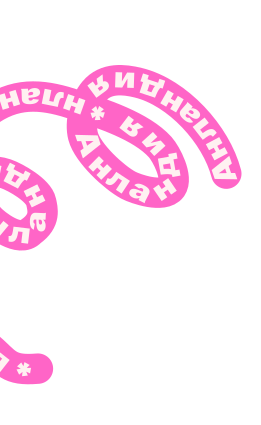
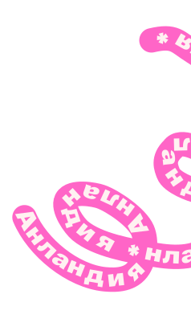
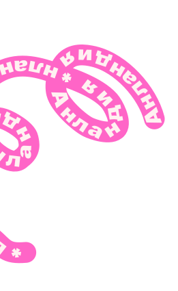
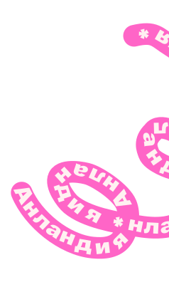

Принципы работы
Я работаю с детьми по принципу
"учимся, играя",
поэтому на наших
занятиях всегда дружеская атмосфера,
где дети чувствуют себя комфортно.
Это благоприятно сказывается на обучении.
 





Я работаю с детьми по принципу
"учимся, играя", поэтому на наших
занятиях всегда дружеская атмосфера,
где дети чувствуют себя комфортно.
Это благоприятно сказывается на обучении.